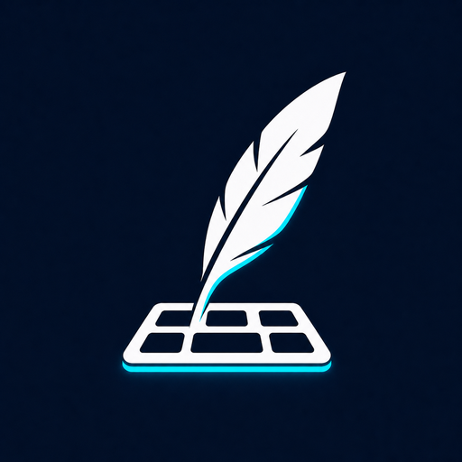
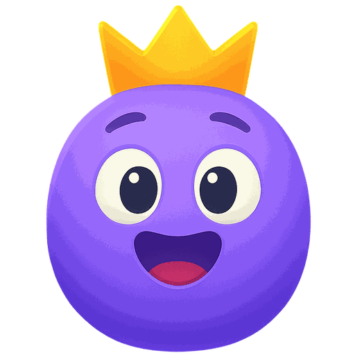
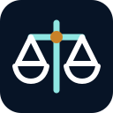
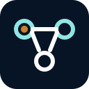
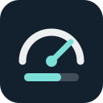

B-Maker
Приложение для планирования, написания, редактирования и подготовки книг к выпуску. Рукопись, версии, персонажи и сюжет хранятся в одном переносимом проекте.
Нативные macOS + Windows · доступен Web
Проекты
Продукты, бесплатные инструменты и новые идеи — от архитектуры и расчётов до работающих решений.
Продукты
Самостоятельные программные продукты: от идеи и архитектуры до реализации.

Приложение для планирования, написания, редактирования и подготовки книг к выпуску. Рукопись, версии, персонажи и сюжет хранятся в одном переносимом проекте.
Нативные macOS + Windows · доступен Web

Английский и базовая математика через курс A0, карточки, голосовую практику, визуальные новеллы и самостоятельные игры.

Браузерная комната для аудио- и видеозвонков, демонстрации экрана и совместной работы на общей доске.
Локальное пространство для резюме, писем и интервью с ATS-проверкой и экспортом в PDF и Word.
Бесплатные инструменты
Небольшие браузерные инструменты для технических и бизнес-решений. Без регистрации, расчёты выполняются локально в браузере.
Переводит потерянное инженерное время, инциденты и задержки разработки в приблизительную годовую стоимость.

Сравнивает полную стоимость собственной разработки и покупки готового решения с учётом внедрения, поддержки, инфраструктуры и opportunity cost.
Оценивает реальную отдачу от корпоративного AI с учётом adoption, экономии времени, качества результата, лицензий, внедрения и сопровождения.
24 вопроса о границах систем, надёжности, данных, безопасности, эксплуатации и стоимости изменений — с architecture score и critical gaps.
Экспресс-оценка IT-поставщика: risk score, степень зависимости, критические red flags и готовое summary.
Оценивает потенциальную экономию на unused и underused лицензиях, избыточных тарифах и пересекающихся SaaS-инструментах.

Показывает критичные знания, которые зависят от одного человека, bus factor proxy и уровень резервирования знаний.

Переводит SLO в error budget по времени и событиям, показывает расход бюджета, остаток и burn rate.
Собирает blameless postmortem после инцидента: impact, timeline, root cause, contributing factors, выводы и action items с владельцами и сроками.
Локально проверяет промпты и рабочий контекст на потенциальные secrets, credentials и персональные данные и создаёт redacted-копию.
Экспресс-оценка технического состояния компании: 30 вопросов, общий score, шесть категорий и критические gaps.
Считает реальную стоимость production-инцидента через потерянную выручку, время команды, компенсации и recovery-затраты.
В разработке
Проекты, которые пока находятся в разработке или проработке концепции.
Рабочее пространство для независимых рекрутеров: база кандидатов, воронка подбора и история взаимодействия с заказчиками.
В разработке
Система управления проектами для планирования работы, контроля прогресса и координации команды.
В разработке
Инструмент для проектирования баз данных и предварительного расчёта потребностей в хранении и ресурсах.
В разработке
Визуальный редактор для создания схем, процессов, связей и других структурированных диаграмм.
В разработке
Пространство для создания интеллект-карт и структурирования идей, знаний и планов.
В разработке
Система верхнеуровневого проектирования IT-архитектуры, компонентов, систем и интеграций.
В разработке